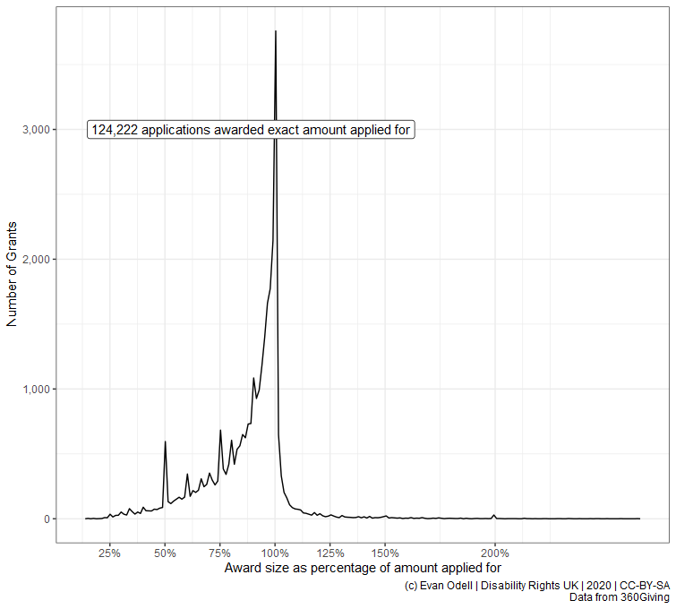

Introduction
introduction.RmdStill a work in progress
library(threesixtygiving)Retrieve all grants
grants <- tsg_all_grants(timeout = 8, retries = 1)Core data
tsg_all_grants returns a list of tibbles, due to differences in the data provided by each funder. tsg_core_data returns a tibble with the 10 columns in the 360Giving Open Standard, plus the publisher prefix used to identify each funder. In the case below I have converted non-GBP currencies to GBP on the rates on 2019-10-24.
library(purrr)
library(dplyr)
df <- tsg_core_data(grants)
df2 <- df %>%
mutate(amount_awarded = case_when(
currency == "USD" ~ amount_awarded/1.29, ## rate on 2019-10-24
currency == "CAD" ~ amount_awarded/1.69,
currency == "CHF" ~ amount_awarded/1.28,
currency == "EUR" ~ amount_awarded/1.16,
TRUE ~ amount_awarded)) %>%
group_by(funding_org_name) %>%
summarise(n = n(),
amount_awarded = sum(amount_awarded)) %>%
mutate(avg = amount_awarded/n)library(ggplot2)
theme_set(theme_bw())
p1 <- ggplot(df2 %>% top_n(20, amount_awarded) %>%
mutate(amount_awarded2 = amount_awarded/100000),
aes(x = reorder(funding_org_name, -amount_awarded2),
y = amount_awarded2, fill = amount_awarded2)) +
geom_col() +
scale_y_sqrt(labels = scales::dollar_format(prefix = "£"),
breaks = c(1000, 5000, 10000, 25000, 50000, 75000, 100000)) +
scale_x_discrete(labels = scales::wrap_format(30)) +
scale_fill_viridis_c() +
labs(x = "Funder", y = "Amount Awarded
(in 100,000s, note logarithmic scale)",
title = "Total Value of Grants Awarded by Twenty Largest Funders",
caption = "(c) Evan Odell | 2019 | CC-BY-SA
Data from 360Giving") +
theme(axis.text.x = element_text(angle = 45, hjust = 1, size = 8),
legend.position = "none")
p1
The plot below shows the average grant value from each funder, with the number of reported grants given by each funder.
library(ggrepel)
p2 <- ggplot(df2 %>% top_n(20, amount_awarded),
aes(x = reorder(funding_org_name, -avg),
y = avg, fill = avg)) +
geom_col() +
geom_label_repel(aes(label = scales::comma(n)), nudge_y = 1,
alpha = 0.35, size = 3.25, hjust =0.5, direction = "y") +
scale_y_sqrt(labels = scales::dollar_format(prefix = "£")) +
scale_x_discrete(labels = scales::wrap_format(25)) +
scale_fill_viridis_c() +
labs(x = "Funder", y = "Average Grant Value",
title = "Average Grant Value",
subtitle = "Label is the total number of grants awarded",
caption = "(c) Evan Odell | 2019 | CC-BY-SA
Data from 360Giving") +
theme(axis.text.x = element_text(angle = 45, hjust = 1, size = 8),
legend.position = "none")
p2
p3 <- ggplot(df2, aes(x = n, y = avg, colour = amount_awarded)) +
geom_point(alpha = 0.7, size = 4) +
geom_text_repel(data = bind_rows(df2 %>% top_n(5, avg),
df2 %>% top_n(5, amount_awarded),
df2 %>% top_n(5, n),
df2 %>% top_n(5, -n),
df2 %>% top_n(5, -amount_awarded)) %>%
distinct(),
mapping = aes(label = funding_org_name), colour = "black",
direction = "both",
arrow = arrow(length = unit(0.03, "npc"), type = "open", ends = "last")) +
scale_colour_viridis_c() +
scale_y_log10(labels = scales::dollar_format(prefix = "£")) +
scale_x_log10(labels = scales::comma) +
labs(y = "Average Grant Value", x = "Number of Grants",
title = "Average Grant Value vs Number of Grants",
caption = "(c) Evan Odell | 2019 | CC-BY-SA
Data from 360Giving") +
theme(legend.position = "none")
p3In the the plot below I’ve highlighted funders that make very many or very few grants, and that are either very large or very small.
Award sizes
In the two examples below, we can see differences between the amount of money applied for and the amount awarded. Not every funder reports the amount applied for, and some report what seem like placeholder values, such as grant programmes where applicants do not need to specify the value of the grant, only what they want to do and leave the award amount up to the funder.
proc_df <- tsg_process_data(grants)
proc_amount_df <- proc_df %>%
select(identifier, title, description, funding_org_name,
amount_awarded, amount_applied_for) %>%
mutate_at(.vars = vars(amount_awarded, amount_applied_for), as.numeric) %>%
mutate(difference = amount_awarded-amount_applied_for,
percentage_of = amount_awarded/amount_applied_for) %>%
filter(!is.na(amount_applied_for), amount_applied_for > 2500,
amount_awarded > 2500,
percent_rank(difference) >= 0.02 &
percent_rank(difference) <= 0.98) %>% ## remove outliers
mutate(difference = round(difference))
count0 <- proc_amount_df %>%
filter(difference==0) %>%
tally()
p4 <- ggplot(proc_amount_df %>% filter(difference != 0),
aes(x = difference)) +
geom_freqpoly(bins = 100) +
geom_label_repel(
aes(x = 0, y = 4000,
label = paste0(scales::comma(n),
" applications awarded exact amount applied for")),
data = count0) +
scale_color_viridis_c() +
scale_y_continuous(labels = scales::comma) +
scale_x_continuous(labels = scales::dollar_format(prefix = "£"),
breaks = c(-20000, -10000, -5000, -2500,
0, 2500, 5000, 7500)) +
labs(x = "Difference between Award and Application Amount",
y = "Number of Grants")
p4
p5 <- ggplot(proc_amount_df %>%
filter(difference != 0, percentage_of != Inf),
aes(x = percentage_of)) +
geom_freqpoly(bins = 200) +
geom_label_repel(
aes(x = 1, y = 3000, hjust = 1,
label = paste0(scales::comma(n),
" applications awarded exact amount applied for")),
data = count0) +
scale_color_viridis_c() +
scale_y_continuous(labels = scales::comma) +
scale_x_continuous(labels = scales::percent,
breaks = c(0, 0.25, 0.5, 0.75,0.9, 1, 1.25, 1.5, 2)) +
labs(x = "Award size as percentage of amount applied for",
y = "Number of Grants")
p5
Systemic change funders
Organisations that are focused on systemic change and policy-influencing seem to be particularly reliant on trusts and foundations for income, as their work is harder to sell to ordinary members of the public motivated by emotional connections with an issue, and see their money going to directly help an identifiable person.
proc_df <- tsg_process_data(grants)
library(stringr)
strat_df <- proc_df %>%
filter_at(.vars = vars(description, title, contains("primary"),
contains("impact"), contains("category"),
contains("classificat")),
.vars_predicate = any_vars(
str_detect(., regex('strategy|strategic|systemic',
ignore_case=TRUE))
)) %>%
filter(amount_awarded >= 2500)
strat_df
proc_df <- proc_df %>%
mutate(
strategic = str_detect(description, regex('strategy|strategic|systemic',
ignore_case=TRUE)
)
)
proc_df2 <- proc_df %>%
group_by(funding_org_name, strategic) %>%
summarise(total = sum(amount_awarded),
mean = mean(amount_awarded),
median= median(amount_awarded),
n= n())
p6 <- ggplot(proc_df2 %>% filter(strategic==TRUE) %>% ungroup() %>% top_n(10, n),
aes(x = funding_org_name, y = mean, fill = strategic)) +
geom_col(position = "dodge")
p6
strat_df <- proc_df %>% filter(strategic)
strat_funders <- strat_df %>%
group_by(funding_org_name) %>%
summarise(strategic_funding = sum(amount_awarded),
mean_strategic = mean(amount_awarded),
median_strategic = median(amount_awarded),
n_strategic = n()) %>% full_join( proc_df %>%
filter(amount_awarded >= 2500) %>%
group_by(funding_org_name) %>%
summarise(total_funding = sum(amount_awarded),
mean_total = mean(amount_awarded),
median_total= median(amount_awarded),
n_total = n())) %>%
mutate(percent_strategic = n_strategic/n_total)
library(tidyr)
strat_funders2 <- strat_funders %>%
pivot_longer(cols = c(mean_strategic, mean_total)) %>%
p7 <- ggplot(data = bind_rows(
strat_funders %>% top_n(10, n_strategic),
strat_funders %>% top_n(10, mean_strategic),
strat_funders %>% top_n(10, strategic_funding)) %>%
distinct(), aes(x = funding_org_name, colour = strategic)) +
geom_col()
scale_color_viridis_d() +
scale_y_log10() +
scale_x_continuous() +
labs(x = "Award size as percentage of amount applied for",
y = "Number of Grants")
p7